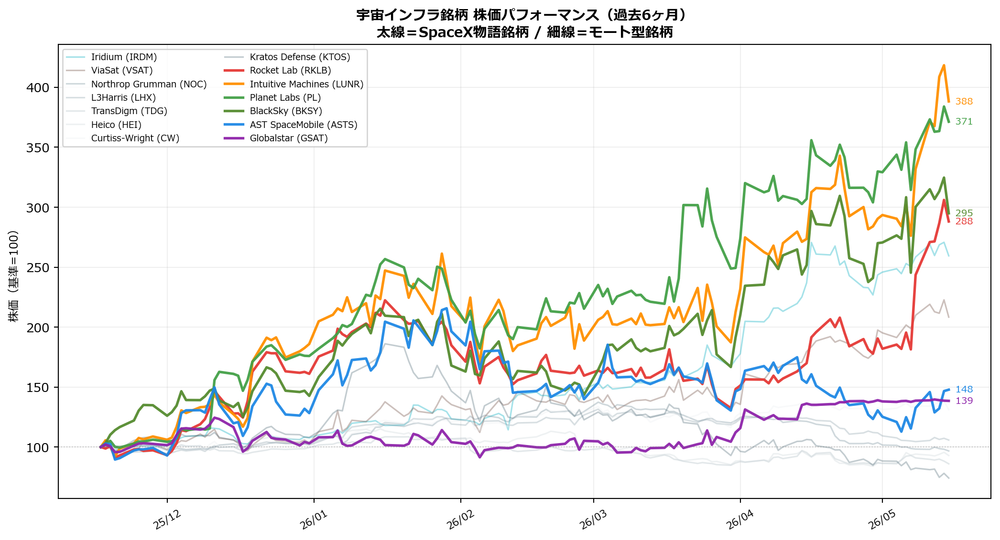
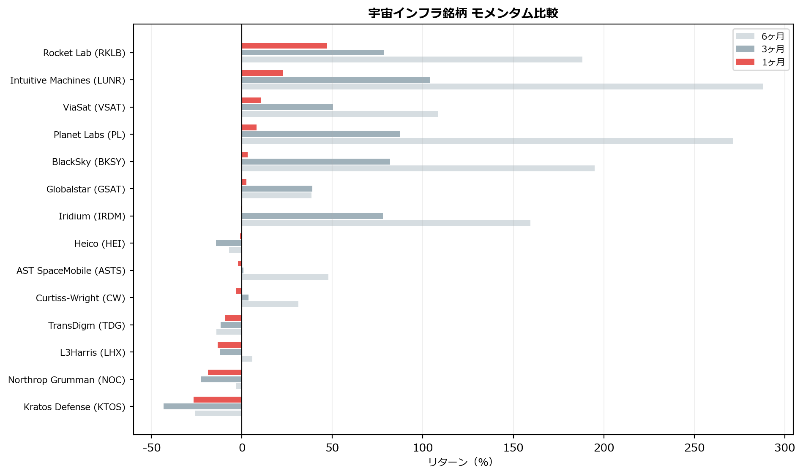
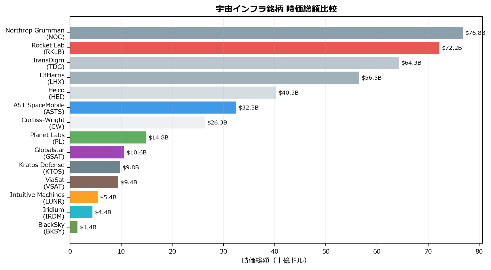

宇宙インフラ：SpaceX IPOが引き金を引くセクター再評価
SpaceXは2026年6月にIPOを予定している。評価額$1.75〜2.0兆ドル、調達額最大$750億は史上最大のIPOだ。SpaceXを直接買えない資金が、類似・関連する上場銘柄に流れ込む構造はすでに始まっている。
なぜ今、宇宙インフラが投資テーマになるのか
宇宙産業は「国家プロジェクト」から「民間インフラビジネス」へと不可逆的に転換した。その中心にいるSpaceXは非上場のまま$1.75兆の評価を得ており、機関・個人投資家は上場できないSpaceXの「代替需要」を公開市場で満たそうとしている。
SpaceX IPOのインパクト：
- 史上最大のIPO（サウジアラムコ$294億の2.5倍超）
- IPO後にSpaceXは流動性の高い「買収通貨（公開株式）」を手に入れ、M&Aを加速
- Starshipの量産が本格化すれば打ち上げコストが90%低下し、川下の衛星・データ企業の利益率が直接改善
- Morgan Stanleyは「Space 60」と呼ぶ関連銘柄リストで波及範囲を示している
現在の市場の読み：「モートより物語」
防衛プライム（NOC・LHX・KTOS）はDOGE（政府効率化省）による調達ボトルネックで売られている一方、宇宙の物語に近い銘柄（RKLB・LUNR・PL）は急上昇している。モメンタムトレードにおいて「乗り遅れた感」が最も強い時期が往々にして買い時となる。
SpaceXの波及マップ
SpaceXの3つの事業柱ごとに、上場市場で資金が向かう銘柄を整理する。
| SpaceXの事業 | 上場市場の代替・関連銘柄 |
|---|---|
| Starship・打ち上げ | RKLB（唯一の公開打ち上げ会社）、LUNR（月面探索） |
| Starlink（衛星インターネット） | ASTS（直接競合）、IRDM（周波数補完）、GSAT、VSAT |
| 宇宙データ・観測 | PL、BKSY（打ち上げコスト低下で利益率改善） |
定量分析
株価パフォーマンス比較（過去6ヶ月）
モメンタム比較（1ヶ月・3ヶ月・6ヶ月）

時価総額比較

銘柄分析
SpaceX物語と最も近い銘柄群
Rocket Lab（RKLB） 打ち上げ・衛星コンポーネントの垂直統合
西側諸国で唯一のSpaceX代替。Electron（小型）での再使用化実績を持ち、中型ロケットNeutronを開発中。衛星バス・コンポーネント事業（Space Systems）が全売上の半分近くに成長しており、「ロケット会社」から「宇宙インフラ会社」への転換が進む。2026年Q1売上は$203M（YoY+64%）、受注残$22億。DoD（米国防総省）が意図的にSpaceXへの依存を分散させるため資金を投入しており、単なる民間企業以上の安全網がある。時価総額$72Bはすでに大型株の領域だが、SpaceX IPOの直接的な比較対象として資金が入り続ける構造。
Intuitive Machines（LUNR） 月面着陸船・Artemis計画
NASA Artemis計画の商業月面輸送（CLPS）プロバイダー。IM-1（2024年）で民間初の月面軟着陸を達成（転倒したが着陸は成功）、IM-2（2025年3月）は月面到達も転倒。IM-3（2026年後半予定）でリベンジを狙う。月面インフラ構築という壮大な物語を持ちながら、時価総額$5.4Bとまだ小さい。RKLBの13分の1の時価総額で同じ宇宙探索ストーリーを共有しており、上昇余地の非対称性が魅力。ただし着陸ミッションごとに株価がバイナリーに動くリスクがある。
衛星インターネット・通信
AST SpaceMobile（ASTS） Starlink Direct-to-Cellの直接競合
低軌道衛星から標準スマートフォンへの直接5G通信を目指す。AT&T・Verizon・楽天モバイル等との提携で$12億以上の契約収益を確保済み。インフラが完成すれば通信キャリアにとって不可欠なプラットフォームとなるポテンシャルを持つが、現在は粗利益率がマイナスで資本集約度が極めて高い。BlueBird衛星の展開に伴う技術的遅延リスクが常に存在する。
Iridium（IRDM） 周波数独占×GPS代替PNT
66基のLEO衛星で極地含む全球カバレッジを提供する唯一の企業。最大のモートはLバンド・Sバンド周波数帯の独占。気象条件に左右されにくく小型アンテナで通信できる特性から、軍事・海事・IoTで代替不可能なインフラとなっている。Satelles買収によるGPS代替PNT（測位・航法・タイミング）サービスは、GPSジャミングが常態化する戦場において軍事的チョークポイントとなりつつある。現在のモメンタムは弱いが、周波数という物理的に複製不可能な資産の長期価値は変わらない。
防衛・宇宙チョークポイント型（現在売られている）
DOGEによる政府調達の人員削減（宇宙軍司令部から約10%削減）で短期的に売られているが、宇宙軍予算自体は+77%（$711億）と増加している。「資金はあるが執行できない」という一時的な官僚的ボトルネックが解消されれば反転する可能性がある。
| 銘柄 | モート | 現状 |
|---|---|---|
| NOC | SDA衛星150基以上のプライム。ロケット推進で競合も依存 | 1M-19%。DOGE懸念で売られているが宇宙軍予算の最大受益者 |
| LHX | Aerojet Rocketdyne買収でロケットエンジン製造能力獲得 | 1M-13%。「Andromeda」プログラム参画 |
| TDG | FAA認証アフターマーケット部品を独占。EBITDA 54% | 6M-14%。宇宙純度は薄いが全セクター通じて最強モートの一つ |
| HEI | PMA認証代替部品でTDGを侵食するディスラプター | 航空宇宙アフターマーケットの双璧 |
| CW | 耐放射線エレクトロニクス。認証に24〜36ヶ月の参入障壁 | 衛星が1基失敗するだけでミッション全損→誰も安物を使えない |
| KTOS | OpenSpaceで衛星地上局をSaaS化。ベンダーロックイン | 3M-43%と急落中。バリュエーション高すぎ（PER558倍）のリスク |
投資判断サマリー
| 銘柄 | 方針 | バケット | 根拠 |
|---|---|---|---|
| RKLB | 保有継続 | 運用枠 | SpaceX IPOの直接代替。DoD育成銘柄。モメンタム継続中 |
| ASTS | 保有継続（小額） | リスク枠 | Starlink競合・ネット話題性。バイナリーリスクを認識した上で小額保有 |
| LUNR | 検討中 | リスク枠 | 時価総額がRKLBの13分の1で同じ物語。IM-3ミッションが近づくにつれ資金流入期待 |
| IRDM | ウォッチ | — | 周波数独占という本物のチョークポイント。モメンタムが弱い今が仕込み時の可能性 |
| PL | ウォッチ | — | Starship量産で打ち上げコスト低下→利益率直接改善。サブスク98%リテンション |
| NOC・TDG | ウォッチ | — | 最強モートだが現在売られている。DOGE懸念解消後の逆張り候補 |
| KTOS | ウォッチ | — | OpenSpaceは本物の堀だが、PER558倍×3M-43%はバリュエーションリスク大 |
SpaceX IPOタイムライン： 2026年4月にSECへ非公開提出済み。6月8日週にロードショー開始予定。それまでの数週間が「IPO前のポジション構築」の最終機会となる可能性がある。